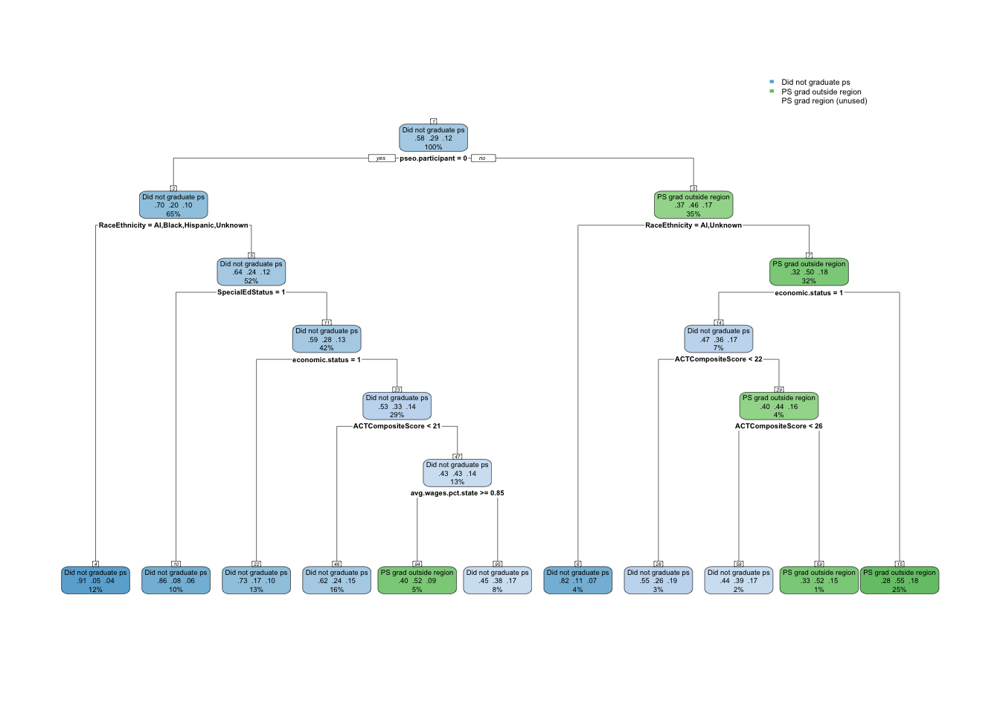
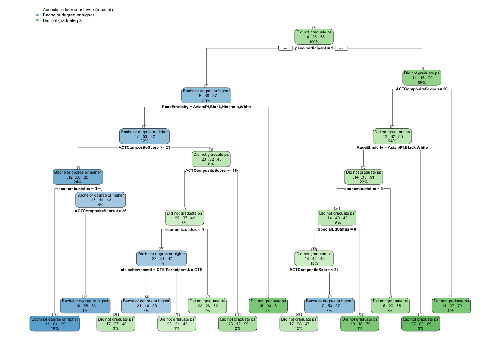

In the previous analyses, post-secondary variables rose to the top again and again as a primary factor in whether an individual had meaningful employment in the region or not. In particular, these two variables were the highest and broke in the following ways;
Across all three modeling scenarios we’ve explored — comparing meaningful employment in the region to employment in Minnesota, to not meaningful employment, and to no Minnesota employment record — ps.grad.location consistently emerged as one of the most important predictors.
Graduating from a postsecondary institution within the region was strongly associated with a higher likelihood of being meaningfully employed in the region, suggesting that geographic alignment between educational attainment and local labor markets fosters stronger employment ties.
Graduating outside the region, particularly outside Minnesota, was linked with an increased likelihood of either securing meaningful employment elsewhere or having no Minnesota employment record at all.
These patterns point to the potential “stickiness” of local graduates in the regional workforce, and the challenges of retaining graduates who leave to complete their education.
Highest Credential Level (highest.cred.level)
highest.cred.level was a dominant predictor in multiple models, particularly when distinguishing between individuals who were meaningfully employed in the region and those who were not.
Earning an associate degree or higher — and especially a bachelor’s degree or higher — was linked with greater odds of being meaningfully employed in the region.
Lower levels of attainment, including “some college” without a credential, “less than associate degree,” or “no college,” were associated with higher rates of disconnectedness (no Minnesota employment record, not attending postsecondary) or employment outside the region.
This reinforces the central role of credential attainment in improving employment stability and alignment with regional labor needs.
For both of these variables, we will combine classifications in order to have a smaller set to model against;
ps.grad.location
PS grad region
PS grad outside region: includes all individuals that graduated from college outside of the region.
Did not graduate ps
highest.cred.level
Associate degree or lower
Bachelors or higher
Did not graduate: includes individuals with some college and no college experience.
master <- master.original %>%mutate(ps.grad.location.new =ifelse(ps.grad.location %in%c("PS grad MN", "PS grad outside MN"), "PS grad outside region", as.character(ps.grad.location)),highest.cred.level.new =ifelse(highest.cred.level %in%c("Associate degree", "Less than Associate Degree"), "Associate degree or lower", as.character(highest.cred.level)),highest.cred.level.new =ifelse(highest.cred.level.new %in%c("No college", "Some college"), "Did not graduate ps", as.character(highest.cred.level.new)))kable(names(master))
This study investigates the factors that influence what secondary education pathway a high school graduate follows. To isolate and understand the predictors of this specific outcome, the analysis compares it separately against three alternative post-secondary variables:
Post-secondary graduation location
Highest Credential Earned in Post-secondary
Graduates classified as Attending post-secondary for either of these are excluded from the analysis.
The modeling process follows these steps:
Data Preparation All predictor variables include demographic characteristics, high school characteristics, and high school achievement indicators. Records with missing target outcome categories are excluded.
Training and Test Split For each post-secondary variable, the data is randomly split into a training set (70–80%) and a testing set (20–30%) to ensure that model evaluation is conducted on previously unseen data.
Modeling
We are going to use the following method to each comparison:
CART (Classification and Regression Tree) for interpretability and identification of clear decision rules. We will start by developing the base model, and then do pre- and post-pruning to determine which model provides the best accuracy.
Evaluation Models are evaluated on the testing set using accuracy, Cohen’s kappa, balanced accuracy, sensitivity, and specificity. Variable importance is examined to identify the most influential predictors for each comparison and time point.
This approach emphasizes clarity in interpretation by focusing each mode three post-secondary distinctions, making it easier to identify which factors most strongly differentiate graduates who follow pathways that lead to secondary pathways that benefit regional workforce employment.
The table below shows that 58% of the individuals did not graduate college, 30% graduated outside their high school region, and only 12% graduated from a college within their region.
ps.grad.location <- data %>%select(-highest.cred.level.new) %>%filter(ps.grad.location.new !="Attending ps") %>%mutate(ps.grad.location.new =as.factor(ps.grad.location.new))comma(nrow(ps.grad.location))
I know the base model is going to overfit and provide an overly complex tree due to having a cost penalty of 0. So I’m just going to print the complexity plot in order to see what the appropriate CP would be to minimize xerror.
Variables used: 13 total, spanning demographics, high school characteristics, and high school accomplishments (e.g., ACTCompositeScore, avg.unemp.rate, avg.wages.pct.state, CTE achievement, economic status, MCA scores, pseo.participant, RaceEthnicity, SpecialEdStatus, total CTE courses taken).
Next, we need to prune. We can either pre-prune or post-prune. We will start with pre-pruning and use each method - max depth, min depth, and min bucket. It’s recommended that I start with the following parameters;
Accuracy: 65.9% — notable improvement over the base model’s 63.6%.
Variables used (8 total): A mix of high school accomplishments (ACTCompositeScore, pseo.participant, cte.achievement), Demographics (economic.status, RaceEthnicity, SpecialEdStatus) and high school characteristics (avg.wages.pct.state)
Tree complexity: Pre-pruning capped growth to maxdepth, resulting in 15 splits vs. 1000+ in the base model.
Variables used (6 total): HIgh school achievements (ACTCompositeScore, pseo.participant), High school characteristics (avg.wages.pct.state), Demographics (economic.status, RaceEthnicity, SpecialEdStatus)
Tree complexity: We simplified the tree to just 10 splits, compared to 15 for the pre-pruned tree.
The post-pruned model provides a much simpler model - 10 splits instead of pre-pruned’s 15 splits - while also giving the same accuracy. I will dive into that one below.
#Plot treerpart.plot(ps.grad.location.model.postprune, nn =TRUE)

Main takeaway
Main Splits
The first and most influential split is PSEO participation. Individuals who did not participate in PSEO are much more likely to fall into the “Did not graduate PS” category. Among non-PSEO participants, the next split is Race/Ethnicity (AI/Black/Hispanic/Unknown vs. other groups), followed by Special Education status and Economic status. For PSEO participants, the main split is also Race/Ethnicity (AI/Unknown vs. other groups), followed by Economic status, and then ACT Composite Score thresholds (< 21, < 22, < 26) along with average wages as a percent of state average. These combinations differentiate between “Did not graduate PS,” “PS grad outside region,” and “PS grad region.”
Variable Importance
PSEO participation – Primary driver of the first split, strongest influence overall.
Race/Ethnicity – Consistent second-level split on both sides of the tree.
Economic status – Influential in both PSEO and non-PSEO branches.
Special Education status – Key split for non-PSEO students from certain racial/ethnic groups.
Average wages (relative to state) – Smaller role, only relevant in a limited branch.
Interpretation Participation in PSEO strongly predicts likelihood of postsecondary graduation and whether it occurs within the high school region. Students without PSEO experience tend to have lower postsecondary graduation rates, especially those from underrepresented racial/ethnic groups, with special education needs, or from lower economic backgrounds. For students with PSEO experience, ACT score thresholds and economic status further refine the likelihood of regional versus non-regional graduation. Higher ACT scores are associated with greater odds of graduating outside the region, while economic disadvantages tilt toward non-completion. Wage levels relative to the state average only appear as a predictor in a narrow subgroup, suggesting it’s not a major factor overall.
Brief Conclusion The model shows that PSEO participation is the most significant factor in predicting postsecondary graduation location, with race/ethnicity, economic status, and ACT performance providing additional differentiation. Non-PSEO participants—especially from underrepresented racial/ethnic groups and lower economic backgrounds—are much more likely not to graduate. Among PSEO participants, academic performance and economic status determine whether graduation is more likely to occur within or outside the high school region.
Analysis - Highest Credential Earned
The table below shows that 58% of the individuals did not graduate college, 28% graduated with a Bachelor degree or higher, and 14% graduated with an Associate degree or lower.
highest.cred.level <- data %>%select(-ps.grad.location.new) %>%filter(highest.cred.level.new !="Attending ps") %>%mutate(highest.cred.level.new =as.factor(highest.cred.level.new))comma(nrow(highest.cred.level))
I know the base model is going to overfit and provide an overly complex tree due to having a cost penalty of 0. So I’m just going to print the complexity plot in order to see what the appropriate CP would be to minimize xerror.
Variables used: 13 total, spanning demographics, high school characteristics, and high school accomplishments (e.g., ACTCompositeScore, avg.unemp.rate, avg.wages.pct.state, CTE achievement, economic status, MCA scores, pseo.participant, RaceEthnicity, SpecialEdStatus, total CTE courses taken).
Next, we need to prune. We can either pre-prune or post-prune. We will start with pre-pruning and use each method - max depth, min depth, and min bucket. It’s recommended that I start with the following parameters;
The post-pruned model provides a bit of a simpler model - 13 splits instead of pre-pruned’s 14 splits - while also giving the same accuracy. I will dive into that one below.
#Plot treerpart.plot(highest.cred.level.model.postprune, nn =TRUE)

Main takeaway
Main Splits The most influential split is PSEO participation. Students without PSEO experience are more likely not to graduate from postsecondary education, while those with PSEO experience show higher rates of earning a bachelor’s degree or higher. For non-PSEO participants, the next split is Race/Ethnicity (Asian/PI/Black/Hispanic/White vs. others), followed by ACT Composite Score thresholds (≥ 21 and ≥ 26), with economic status and CTE achievement further refining outcomes. For PSEO participants, ACT Composite Score (≥ 20) is the initial determinant, followed by Race/Ethnicity, economic status, and Special Education status. In some branches, lower ACT scores (< 24) and special education status predict much higher rates of non-completion.
Economic status – Important in both PSEO and non-PSEO paths, associated with lower completion at higher credential levels.
CTE achievement – Plays a smaller but notable role for high-scoring non-PSEO students.
Special Education status – Particularly important for lower ACT PSEO students.
Interpretation PSEO participation sharply divides the likelihood of postsecondary credential attainment. Non-PSEO students—particularly from certain racial/ethnic groups and with lower ACT scores—are far more likely to not graduate, while higher ACT scores and favorable economic conditions increase the odds of earning bachelor’s degrees. For PSEO students, ACT performance remains a strong determinant, with high scorers more likely to reach bachelor’s or higher credentials, and low scorers—especially those from disadvantaged economic backgrounds or with special education status—more likely not to complete. CTE achievement provides a modest boost in certain high-performing, non-PSEO cases.
Brief Conclusion The model underscores PSEO participation and ACT performance as the two most critical predictors of highest credential earned, with race/ethnicity, economic status, and—more selectively—CTE achievement and special education status providing additional nuance. High ACT scores combined with PSEO participation strongly favor bachelor’s-level attainment, while low scores, economic disadvantage, and lack of PSEO participation correspond with non-completion.
Comparison
Both models identify PSEO participation as the strongest predictor, but the way subsequent variables shape outcomes differs.
For ps.grad.location.new, the primary narrative is about where postsecondary graduation occurs—or if it happens at all. After PSEO participation, Race/Ethnicity is the next most influential factor in both branches, followed by Economic status and multiple ACT Composite Score thresholds. Special Education status plays a role mainly for non-PSEO students, while average wages (relative to state) only appears in a small branch. The outcome paths focus on the geographic context of graduation (within region, outside region, or no graduation).
For highest.cred.level, the emphasis is on how far a student progresses academically. After PSEO participation, ACT Composite Score takes a larger role in differentiating degree levels, with several score thresholds driving major branches. Race/Ethnicity still appears early but is sometimes secondary to ACT performance. Economic status consistently lowers the likelihood of earning bachelor’s degrees, while CTE achievement and Special Education status appear in smaller but notable branches. The outcome paths here are more strongly tied to academic performance and degree completion level.
Key Differences
Second Split: Location model → Race/Ethnicity; Credential model → ACT Composite Score.
Geography vs. Attainment: Location model’s later splits focus on regional vs. non-regional graduation; Credential model’s later splits focus on associate vs. bachelor’s degree attainment.
Unique Predictors: Location model includes average wages; Credential model includes CTE achievement.
Special Education Influence: Appears earlier and more prominently in Credential model’s PSEO branch, but mostly in the non-PSEO branch for Location model.
Brief Conclusion While both models agree that PSEO participation is the critical starting point, the determinants that follow diverge according to the outcome of interest. Geographic graduation patterns are more closely tied to demographic and economic factors, whereas credential level is more directly tied to academic performance and CTE involvement.